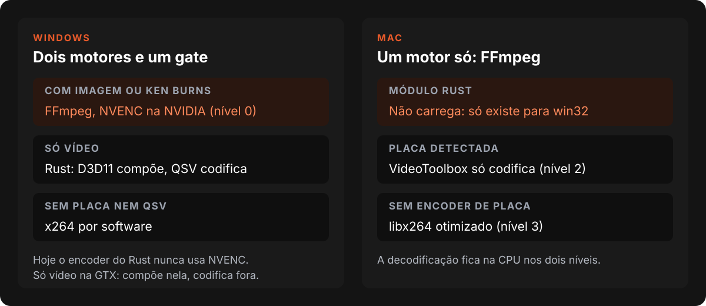
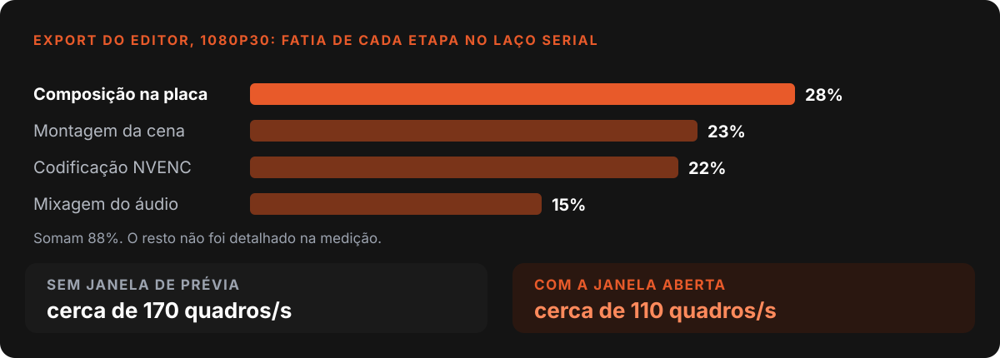
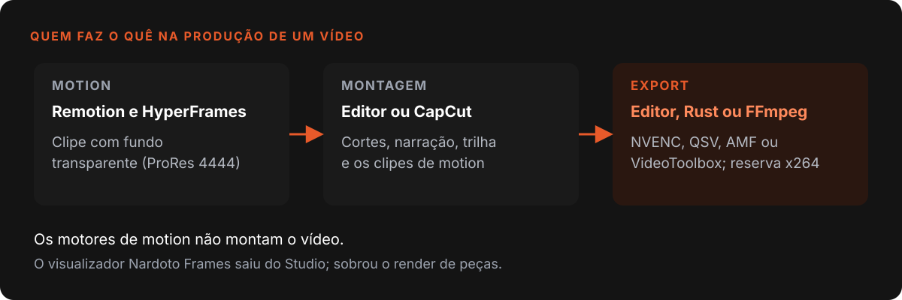
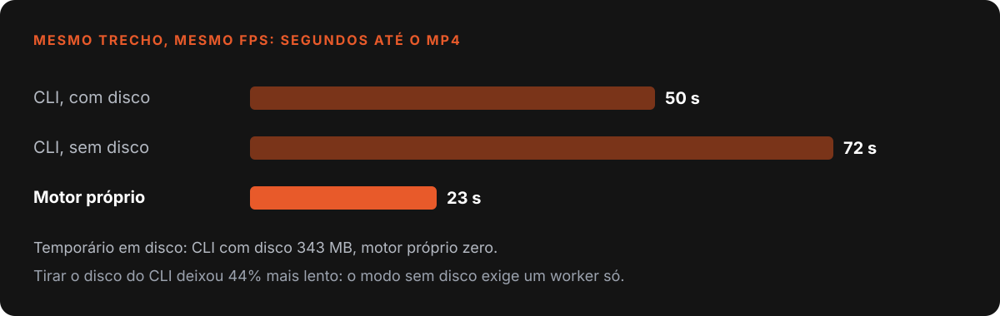

Nardoto
NardotoO render do Editor: GPU no Windows, FFmpeg no Mac
Como o Nardoto Studio renderiza vídeo: módulo Rust no Windows, FFmpeg no Mac, o export do CapCut aberto no Ghidra e os bugs de Remotion e HyperFrames.

Renderizar vídeo parece um problema de uma linha: pegar os clipes e escrever um MP4. No Nardoto Studio virou quatro problemas, em motores diferentes, e dois deles eu só descobri quebrados quando fui testar no app de verdade.
Este post conta como o render está montado em Windows e Mac, o que aprendi abrindo o export do CapCut num descompilador, onde entram Remotion e HyperFrames e os erros que mais custaram tempo. O contexto do produto está em como eu trabalho com IA e na geração de vídeo por etapas.
O que o código diz hoje (29/10/2026)
- O pipeline de render por FFmpeg tem 1.272 linhas em
ffmpegGpuPipeline.js, mais 456 no detector de GPU, em 11 commits.- O módulo nativo em Rust tem 4.825 linhas em 20 arquivos, 8 commits, o primeiro em 25/02/2026.
- O exportador do Nardoto Editor (C++/Qt) tem 2.878 linhas em
Exporter.cpp.
Dois motores no Windows, um no Mac
Para renderizar o projeto de CapCut, o Studio tem dois motores. O primeiro é um módulo Rust carregado como addon do Node: decodifica em paralelo, compõe os quadros na GPU com D3D11 e codifica com QSV, caindo para x264 se a Intel não responder. O segundo é o FFmpeg por linha de comando.
Quem decide é um gate de uma linha em preview.js: if (ctx.nativeRender && !hasImages). Projeto só de vídeo vai para o Rust. Projeto com imagem ou Ken Burns vai para o FFmpeg, porque o motor nativo não anima.

No Mac o main.js procura um arquivo chamado nardoto-render.win32-x64-msvc.node, não acha, e o motor nativo fica nulo. Sobra o FFmpeg, com um detector que classifica a máquina em níveis. O nível 0 é o caminho que mantém tudo na memória da placa NVIDIA, da decodificação ao NVENC 1.
| Nível | Quando | Decodifica | Codifica |
|---|---|---|---|
| 0 | NVIDIA com scale_cuda e overlay_cuda |
NVDEC | NVENC |
| 1 | AMD (ou NVIDIA sem filtros CUDA) | placa | AMF ou NVENC |
| 2 | Intel QSV ou Apple VideoToolbox | CPU | placa |
| 3 | nenhum encoder de placa | CPU | x264 |
Eu costumava dizer "no Mac é software". O código diz outra coisa: se o FFmpeg tiver h264_videotoolbox, o detector codifica pela placa e deixa a decodificação na CPU. Software puro é o último nível.
O furo que eu só vi lendo o código
Numa auditoria de GPU em junho, com nvidia-smi aberto, achei algo contra-intuitivo. O Chromium do app já usa a placa dedicada. Mas o módulo Rust usa a GTX só para compor: o encoder dele tenta QSV e depois software, e nvenc não aparece uma vez sequer no código Rust.
Na prática, projeto só de vídeo, o caso mais comum, compõe na NVIDIA e comprime na CPU ou na Intel. O NVENC só abre quando há imagens. Documentei o conserto na época (detectar a GPU antes do gate), com uma armadilha: o cache do detector está frio no primeiro render, e um getCached() ali viraria um no-op silencioso. Conferi hoje: o gate continua igual. O conserto não foi aplicado.
Abrindo o export do CapCut no Ghidra
O README do módulo Rust cita o CapCut como alvo (uma DLL de 62 MB, 174 threads). Em 13/10/2026 fui ver por dentro: instalei o Ghidra 12.1.4 com JDK 21 para descompilar o videoeditor.dll do CapCut 9.5.0.4050. Analisar uma DLL de 68 MB inteira é lento. O truque foi importar sem análise (cerca de 1 minuto) e usar um script que desmonta só a função pedida e as que ela chama.
O relatório saiu com 69 linhas, cada item marcado como confirmado, provável ou não encontrado. Essa marcação é a regra de ouro da engenharia reversa. Entre os confirmados:
- Export separado da prévia, por padrão em outro processo.
- Grafo de etapas com filas e threads nomeadas, não um laço.
- Áudio em grafo próprio, copiado sem recodificar quando não foi editado.
- Export paralelo por segmentos, concatenados no fim.
- Pré-render de trechos pesados em cache com chave md5.
Tamanho das filas e preset exato do NVENC ficaram como "não encontrado".
Medir o nosso antes de copiar
Antes de copiar, medi o export do Nardoto Editor num projeto de pintura em 1080p30. O exportador grava um cronômetro por etapa num log temporário. Sem a janela de prévia ele fazia cerca de 170 quadros por segundo. Com a janela aberta, cerca de 110. O laço era serial.

O relatório listou sete coisas para copiar, da maior vantagem para a menor. A primeira ataca exatamente a queda de 170 para 110. A terceira, áudio fora do laço de vídeo, já está no código de trabalho do Editor: uma thread produz os pacotes AAC e o laço só grava. Um comentário ali diz que o áudio dentro do laço custava cerca de 30 segundos num export de 12:37 de vídeo. Essa mudança ainda não foi commitada, então ainda não é entrega.
Baixei também o FilmCraft e o EffectCraft, de licença permissiva, e listei seis algoritmos para portar, como os 38 modos de mistura e o medidor de loudness. Sendo franco, é uma lista, não um porte feito: nenhum arquivo do Editor cita os dois projetos hoje.
Motion graphics: Remotion e HyperFrames
Remotion e HyperFrames não montam vídeo no Studio. Só fazem motion graphics: um clipe de fundo transparente (ProRes 4444, em .mov) que o Editor ou o CapCut coloca na linha do tempo.

O Remotion que nunca renderizou
Em 16/08/2026 testei o Remotion no app real e descobri que ele nunca tinha produzido um vídeo. Não era regressão, era um caminho que nunca fechou. Dos quatro caminhos de render, só um funcionava, e o que o chat usava era um dos mortos: chamava um render-cli.js que não existe no disco nem no instalador. Os bugs vinham em cascata, cada um só aparecia depois de consertar o anterior.
O mais bobo: a tela mandava "Qualidade" em porcentagem (60, 80, 90, 100) para a opção crf, que aceita de 1 a 51. Toda escolha da interface estourava. O cancelamento também falhava, porque o Remotion quer o retorno de makeCancelSignal(), não um AbortSignal 2.
O erro de método foi pior que os bugs. O código tinha um catch que caía no caminho antigo e trocava o erro real por um "spawn ENOENT" que não dizia nada. Tirei o catch. A regra desde então: testar render olhando o MP4 no disco, nunca por success: true. O chat chama esse render pelas ferramentas de MCP, então o caminho quebrado era justamente o que a IA usava.
Sobrou um risco de ambiente: o primeiro render baixa cerca de 107 MB de um Chrome próprio, sem aviso. Hoje o código tenta reaproveitar um Chrome ou Edge local antes. Mais casos em bugs que só aparecem no cliente.
HyperFrames: a lentidão que não era do motor
Abrir um projeto pronto no estúdio do HyperFrames demorava uma eternidade. Minhas hipóteses (os 1.962 tweens do GSAP, os filtros de desfoque, o DOM) caíram uma a uma nas medições. A resposta estava no log da própria ferramenta: de 847 linhas, 542 eram a mesma, Thumbnail generation failed: Navigation timeout of 10000 ms exceeded.
Cada miniatura reabre a composição inteira, e várias navegações juntas estouram o teto de 10 segundos. Desligar as miniaturas pelo botão da interface não fez diferença. A saída foi não usar o estúdio para assistir e criar um render pelo motor do próprio player.

Persegui os 19,5 GB de JPEGs temporários achando que eram o gargalo. Não eram: sem disco o CLI ficou 44% mais lento. O custo era por quadro, cerca de 100 ms contra 16 ms do player.
O pior bug foi uma armadilha da janela invisível do Electron 3. Chamar invalidate() depois do seek não gera um quadro novo, devolve o anterior: 119 quadros errados em 120. O padrão certo é contra-intuitivo, armar o ouvinte do paint antes do seek e nunca chamar invalidate(). E contar quadros entregues não prova nada, então carimbei o número do quadro numa cor e li de volta de dentro do MP4 codificado: 480 de 480.
O que eu levaria para qualquer projeto
- Meça o seu antes de copiar o dos outros. O cronômetro por etapa mostrou onde o tempo ia.
- Marque o que você confirmou e o que é palpite. "Provável" é uma resposta honesta.
- Teste render olhando o arquivo. Um
success: truejá escondeu um motor inteiro quebrado. - Leia o log da ferramenta antes de culpar o motor. 542 linhas iguais valem mais que três hipóteses.
- Registre o conserto que você não fez. O furo do NVENC está documentado, com a armadilha. Só não está aplicado.
Referências
- Using FFmpeg with NVIDIA GPU Hardware Acceleration, NVIDIA
- renderMedia(), documentação do Remotion
- Offscreen Rendering, documentação do Electron
Escrito por Tharcisio Nardoto, engenheiro civil e criador do Nardoto Studio.